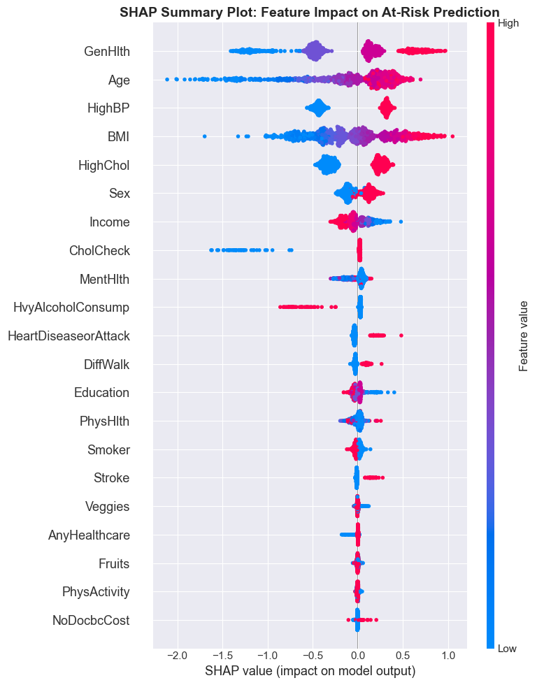
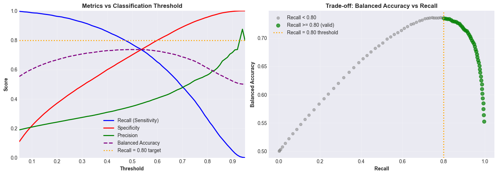

01The problem
Nearly 45% of adults with diabetes worldwide don't know they have it. "Early detection" is the intervention, but only if the model is tuned for the right kind of mistake.
The global healthcare cost of diabetes has grown 338% over 17 years and is projected to hit $1 trillion by 2050. A pre-screening tool that can flag at-risk people for follow-up testing has real value, but only if it's built around the clinical reality of how it will be used.
That reality is asymmetric. A pre-screening tool has two ways to be wrong, and they aren't equal:
Correct, no action.
Annoying. Sends a healthy person for a follow-up test.
Tells a diabetic person they're fine. They delay treatment. Complications develop.
Correct, referred for testing.
False negatives are far more costly. That realisation determined the entire model design: optimise for recall, not accuracy or F1. Everything downstream, the threshold, the calibration, the loss surface I cared about, followed from that single decision.
02Approach
I worked through the full CRISP-DM pipeline rather than jumping straight to a classifier. The framework's value, on a dataset this messy, is that it forces you to look at the data before you model it.
- Dataset. CDC BRFSS, 250,000 survey observations across the full set of behavioural and health indicators, with strong class imbalance (most respondents non-diabetic).
- Association Rule Mining first. Apriori (min 2% support, min 30% confidence, lift > 1.5) to surface co-occurring risk patterns before committing to a model. Top pattern: poor general health combined with other risk factors. This phase was about understanding the structure of the data, not about producing rules to ship.
- Classification, three-class. No diabetes / Prediabetes / Diabetes. Three-class is more clinically meaningful than binary, prediabetes is exactly the intervention window where lifestyle changes still work.
- Model. XGBoost with Platt (sigmoid) calibration so probability outputs are interpretable, not just ordinal scores. Threshold set at 0.15 rather than the default 0.5, this is where the recall trade-off is made explicit.
- Clustering, in parallel. Unsupervised segmentation to group the population into risk profiles for targeted public-health interventions. Ran alongside the classification work, not after it.
03Key decisions
Three choices mattered more than the model architecture itself:
04Explainability
The top risk factors from SHAP, general health self-rating, age, high blood pressure, BMI, match what a GP already knows. I take that as a sign of validity rather than a boring result. A screening model that surfaces risk factors a clinician disagrees with isn't necessarily wrong, but it owes you a much bigger explanation. One that matches clinical intuition only owes you an evaluation.

Why this matters for deployment
A screening tool needs to do two things at once: surface high-risk patients, and explain why. SHAP makes the second possible without giving up the first, the model stays an XGBoost classifier, and the explanation layer sits on top.
05Results
Headline numbers on the held-out test set:
| Metric | Value | Why this matters |
|---|---|---|
| Recall (diabetic class) | ~80% | The cost-asymmetric target. 4 in 5 diabetic patients flagged. |
| ROC-AUC | 0.82 | Threshold-independent discrimination. |
| Decision threshold | 0.15 | Where the recall trade-off is made explicit. |
| Class | 3-way | No diabetes / Prediabetes / Diabetes. |

06What I'd do differently
Two limitations I want to be explicit about, because a screening tool that ignores them isn't ready for clinical use:
- Self-reported survey data introduces reporting bias. BRFSS asks people about their own behaviour and health, that's both its scale advantage and its main weakness. People under-report things they're embarrassed about and over-report things they think the interviewer wants to hear. A model trained on self-report will mirror that.
- Subgroup fairness was not audited. Performance was reported in aggregate, not per age group, sex, or ethnicity. A deployed screening tool needs that breakdown before any clinical use, if recall drops 15pp on one subgroup, the cost-asymmetry argument breaks down for exactly the people who need the model to be cautious.
The other thing I'd pursue: cost-sensitive learning at the loss level, rather than only at the threshold. Pushing the asymmetry into training rather than only into the decision rule would let the model learn a richer representation of "where the false negatives live", and would make the threshold less load-bearing.